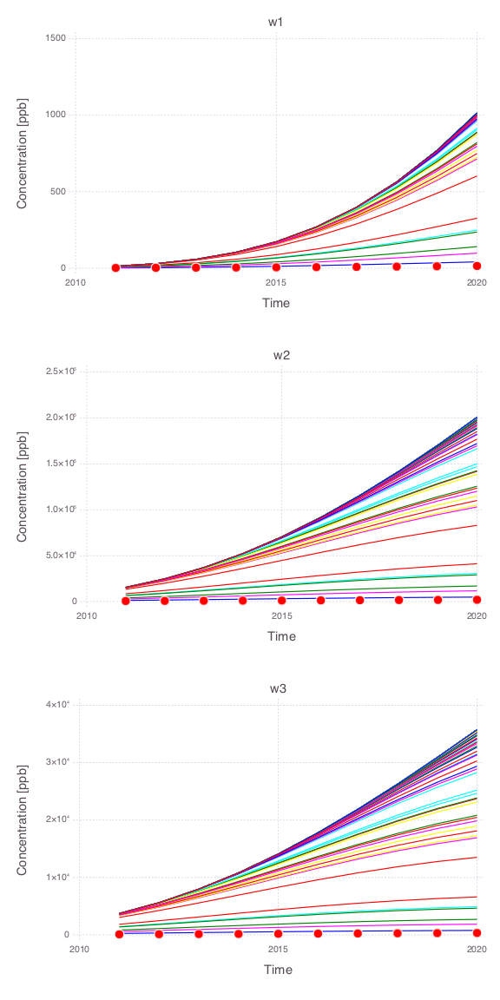

Uncertainty Quantification
MADS is used to perform uncertainty quantification using Bayesian sampling.
The analyses below are performed using examples/bayesian_sampling/bayesian_sampling.jl.
Model setup
There are:
- Contaminant source (yellow rectangle)
- 3 monitoring wells (W1, W2, and W3; blue dots)

Prior spaghetti plots
Below we show joint and individual spaghetti plots of 100 model runs representing the prior model prediction uncertainties at the 3 monitoring wells.
Joint spaghetti plots
All model parameters are changed simultaneously within their prior uncertainty ranges.

Individual spaghetti plots
A single model parameter is changed at a time.
- Source $x$ location

- Source $y$ location

- Source size along $x$ axis

- Source size along $y$ axis
- Source release time $t_0$

- Source termination time $t_1$

Model calibration match

Bayesian sampling results

Posterior spaghetti plots
Spaghetti plots of 1000 model predictions representing the posterior model uncertainties at the 3 monitoring wells.
Joint spaghetti plots
All model parameters are changed simultaneously within their prior uncertainty ranges.

Individual spaghetti plots
A single model parameter is changed at a time.
Note that only the posterior uncertainties in the source release time ($t_0$) and the source termination time ($t_1$) have a large impact on the model predictions.
- Source $x$ location (all the 1000 model predictions are overlapping)

- Source $y$ location (all the 1000 model predictions are overlapping)

- Source size along $x$ axis (all the 1000 model predictions are overlapping)

- Source size along $y$ axis (all the 1000 model predictions are overlapping)
- Source release time $t_0$

- Source termination time $t_1$